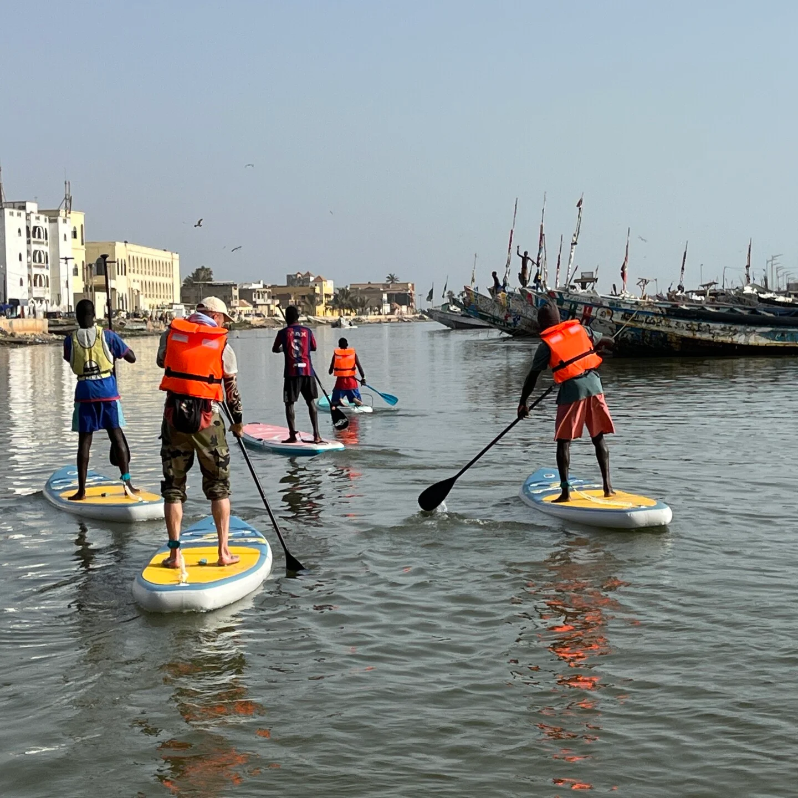

Nettoyage des berges
Mobiliser les habitants et les bénévoles pour contribuer à la propreté des berges et des espaces riverains.
Nos initiativesTHE FLOW SÉNÉGAL · ASSOCIATION CITOYENNE
The Flow Sénégal rassemble les citoyens autour d'une ambition commune : protéger le fleuve Sénégal et son environnement immédiat, notamment ses berges, ses espaces naturels et les lieux de vie des communautés riveraines. Ensemble, agissons pour un cadre de vie plus propre, plus sain et plus durable.
The Flow Sénégal est une association citoyenne engagée dans la protection du fleuve Sénégal et de son environnement immédiat à Saint-Louis.
À travers des initiatives de nettoyage, de sensibilisation, de sport et de mobilisation collective, l'association encourage les habitants, les jeunes, les bénévoles et les partenaires à prendre soin du fleuve et de ses alentours.
En savoir plus sur l'association
« Notre engagement est de protéger le fleuve Sénégal, de préserver ses berges et son environnement immédiat, et de transmettre aux générations futures le respect de ce patrimoine naturel commun. »
Pape Mbaye
Président de l'association The Flow Sénégal
La protection du fleuve passe aussi par celle des espaces naturels et des lieux de vie qui l'entourent.

Le fleuve Sénégal fait partie du paysage, de l'histoire et de la vie quotidienne des communautés riveraines. Sa préservation concerne aussi les berges, les espaces naturels et les zones fréquentées par les habitants.
Les déchets et les comportements nuisibles à l'environnement peuvent dégrader ces espaces. Une mobilisation collective contribue à encourager des pratiques plus responsables et à préserver la qualité du cadre de vie.
Des initiatives qui rapprochent les citoyens de leur fleuve et encouragent la responsabilité environnementale.
Mobiliser les habitants et les bénévoles pour contribuer à la propreté des berges et des espaces riverains.
Nos initiatives
Encourager les gestes responsables et faire connaître les enjeux de la protection du fleuve et de ses alentours.
Nos initiatives
Favoriser la découverte du fleuve à travers des activités éducatives, sportives et nautiques adaptées.
Nos initiatives
Réunir les jeunes, les riverains, les associations et les partenaires autour d'objectifs communs.
Participer
Valoriser le patrimoine local grâce à des initiatives culturelles et artistiques porteuses de sens.
Voir la galerie
Faire du sport un moyen de créer du lien, de mobiliser les jeunes et de transmettre des valeurs citoyennes.
Découvrir le programmeNettoyages, sorties en paddle, jeunes du quartier : quelques moments forts de nos actions à Saint-Louis.


Vous êtes riverain, étudiant, bénévole, association ou partenaire ? Rejoignez The Flow Sénégal et contribuez à des actions en faveur du fleuve et de son environnement immédiat.
Nous contacter